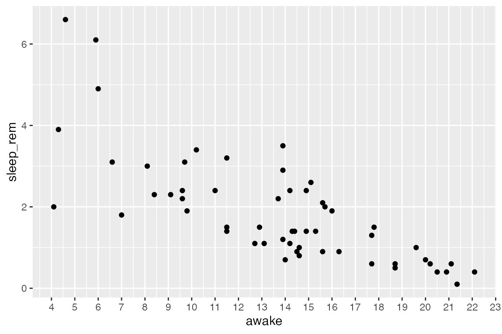
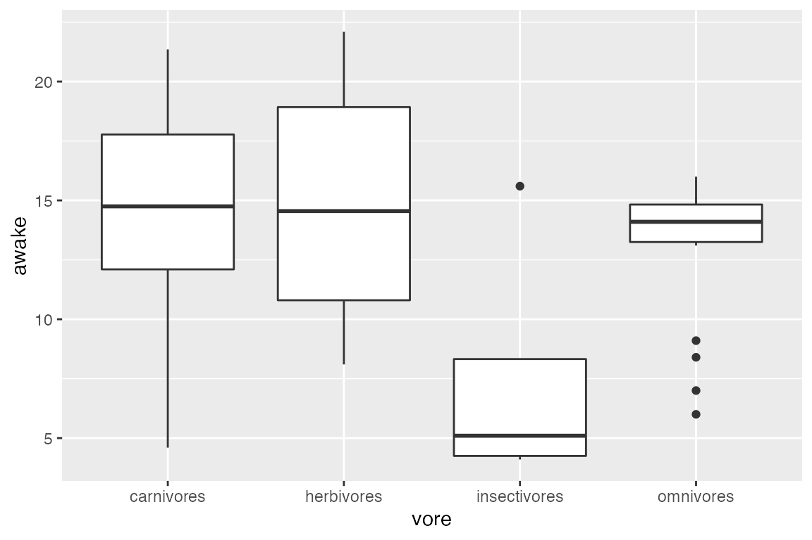
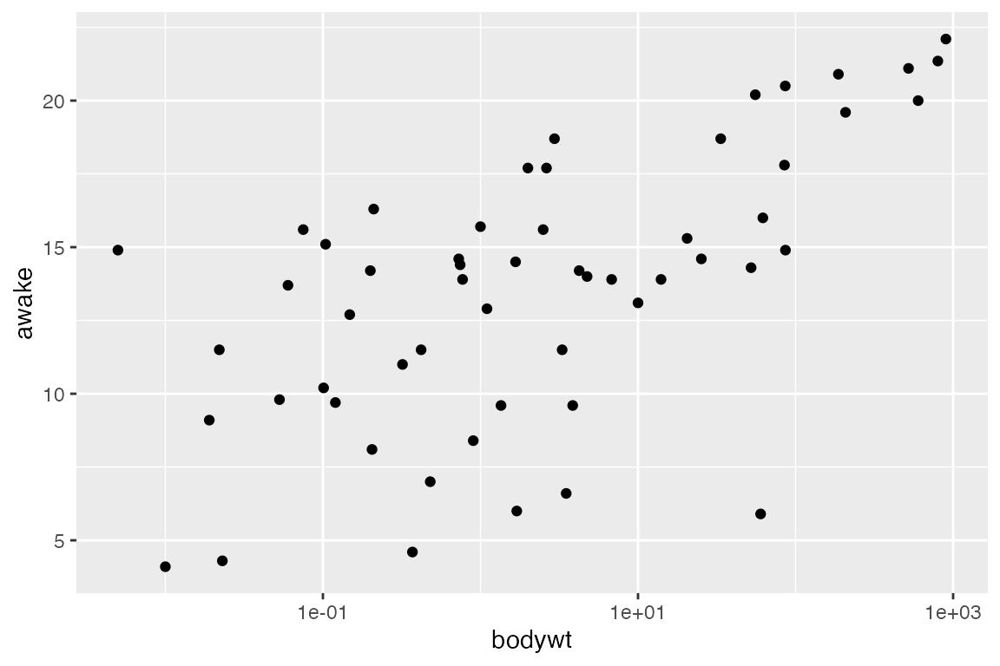

The specific ranges and positioning of axes are a type of scale in ggplot2 grammar of graphics. This tutorial demonstrates a minimal, but important, subset of ways you can modify the axis scales. Note that modifying the size, angle, or color of the axes, axis title, or axis text themselves requires modifying your theme, which is not described here.
All examples will alter axes in one of these three plots, using a modified version of the msleep dataset with certain NA values removed:
# Remove NAs from the columns awake, sleep_rem, vore, and brainwt for plotting demonstration
# We'll call this dataset `msleep_clean`
msleep %>%
tidyr::drop_na(awake, sleep_rem, vore, bodywt) -> msleep_clean
# First plot used in examples
ggplot(msleep_clean) +
aes(x = awake, y = sleep_rem) +
geom_point() -> plot1
# Second plot used in examples
ggplot(msleep_clean) +
aes(x = vore, y = awake) +
geom_boxplot() -> plot2
# Third plot used in examples
ggplot(msleep_clean) +
aes(x = bodywt, y = awake) +
geom_point() -> plot3
# Add plots together, which is allowed when you load the {patchwork} library
plot1 + plot2 + plot3Simply changing the ranges (limits)
ggplot2 will automatically decide the axis limits for a given plot you make, but you can easily customize this with the quick functions xlim(<low>, <high>) and ylim(<low>, <high>). For example:
ggplot(msleep, aes(x = awake, y = sleep_rem)) +
geom_point() +
xlim(0, 10) + # Set x-axis to range from 0-10
ylim(1, 6) # Set y-axis to range from 1-6
#> Warning: Removed 71 rows containing missing values (geom_point).Be careful to pay attention to warning messages if you change the axis limits, as you may accidentally remove points from the plot! The warning message above is telling us that 71 rows were excluded from this plot. Rows usually get excluded for one of two reasons: 1) The rows contained NA values in these variables so there was nothing to plot, or 2) The rows fell outside the plot’s axis ranges. In this case, we removed all NA values from the variables awake and sleep_rem. This means by limiting our axes, we have removed 71 points of data!
Unless you have a specific reason for doing it, don’t ever intentionally exclude points. For example, this is usually a bad idea, unless your specific goal is to visualize only mammals which are awake for between 15-20 hours/day:
ggplot(msleep_clean) +
aes(x = awake, y = sleep_rem) +
geom_point() +
xlim(15, 20)
#> Warning: Removed 42 rows containing missing values (geom_point).Changing the tick locations and labels
ggplot2 will also decide where the tickmarks (“breaks”) and associated axis text (“labels”) appear automatically, but of course, anything can be customized! When changing the breaks and labels, you first need to know what kind of axis you are dealing with: Does it use continuous values (the full number line) or does it use discrete values?
There are different functions to use depending on the type of axis you have: Axes showing continuous values use functions scale_x_continuous() and scale_y_continuous(), and axes showing discrete values use functions scale_x_discrete() and scale_y_discrete() for customizing X and Y axes, respectively.
The key arguments you can use include:
-
breaks, an array of where tick marks should be placed along the given axes. The values inbreaksmust be compatible with values on your axis. -
n.breakscan instead be used to give the actual number of major breaks (ticks) you’d like to see. -
labels, an array of labels for associated ticks, if you would like to CHANGE them further. The length of this array must match the length of thebreaks(or the default number of breaks if you aren’t specifying breaks). -
limits: an array ofc(low, high)for the axis limits. This has the same functionality as functionsxlim()and/orylim(), but can also be specified here if you want. -
name: You can also rename the axis (same as usinglabs()) with the argumentnameif you want.
Examples: Continuous axes
Official documentation!
Change the location of tickmarks:
ggplot(msleep_clean) +
aes(x = awake, y = sleep_rem) +
geom_point() +
# Specify placement for tickmarks aka break (terrible plot, good demo!)
# Specifying tickmarks will also determine the axis labels
scale_x_continuous(breaks = 4:23)
Change the location of tickmarks and use your own labels (for demonstration purposes):
new_labels <- letters[1:20] # R has built-in variables letters (a-z) and LETTERS (A-Z). This line says, "take the 1st-20th value in letters and save to a variable called `new_labels`".
# See the variable we will use for labels.
new_labels
#> [1] "a" "b" "c" "d" "e" "f" "g" "h" "i" "j" "k" "l" "m" "n" "o" "p" "q" "r" "s"
#> [20] "t"
# And the plot:
ggplot(msleep) +
aes(x = awake, y = sleep_rem) +
geom_point() +
# Make sure breaks and labels are the same length
scale_x_continuous(breaks = 4:23, labels = new_labels)Example: Discrete axes
Official documentation!
Change the labels of tickmarks:
ggplot(msleep_clean) +
aes(x = vore, y = awake) +
geom_boxplot() +
scale_x_discrete(labels = c("carnivores", "herbivores", "insectivores", "omnivores"))
For discrete data like vore, you will not have much luck changing the number of breaks. This is because the axis is discrete, and the breaks are what they are:
ggplot(msleep_clean) +
aes(x = vore, y = awake) +
geom_boxplot() +
# there aren't 10 values along the X-axis; only 4!! So, ggplot2 bails.
scale_x_discrete(breaks = 10)
Applying a log scale
When data has extreme ranges, it can be useful to apply a log-scale. We can accomplish this with either scale_x_log10() or scale_y_log10(), depending on which axis you want to visualize on a log scale (it may be both!). The variable bodywt has an extreme range of values, making trends difficult to visualize on linear scales. It may be helpful to transform, as shown below:
ggplot(msleep_clean) +
aes(x = bodywt, y = awake) +
geom_point() +
# Change x axis to log scale
scale_x_log10()
# If the axes were switched, we'd switch the scale command to `y`
ggplot(msleep_clean) +
aes(x = awake, y = bodywt) +
geom_point() +
# Change y axis to log scale
scale_y_log10()